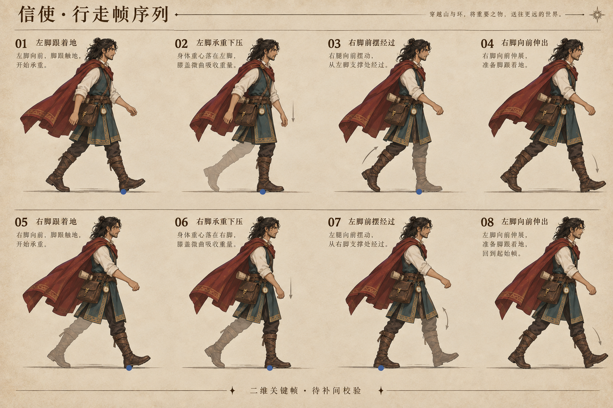
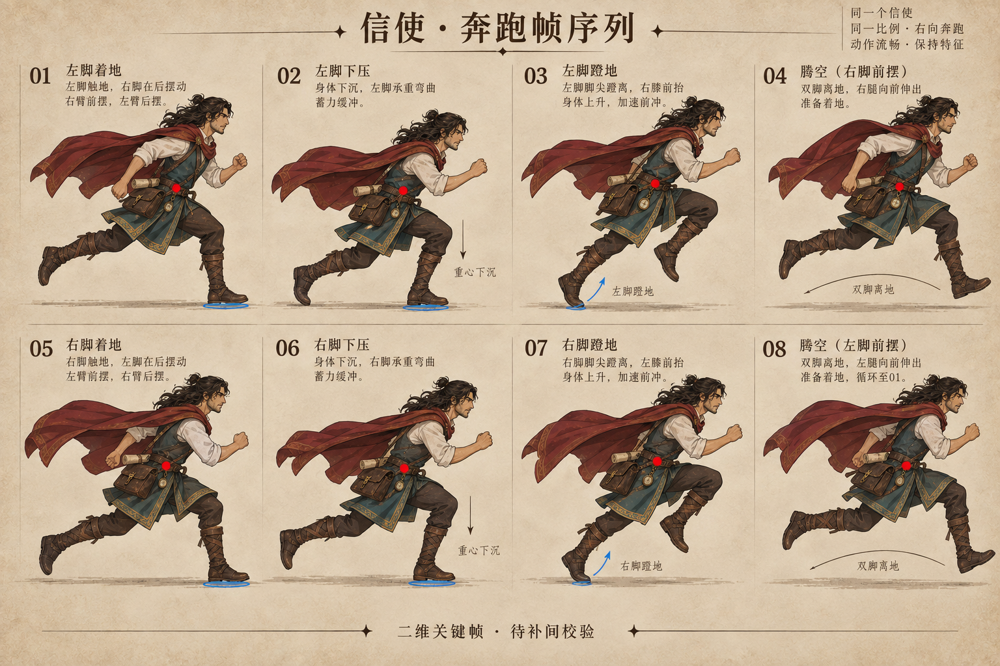
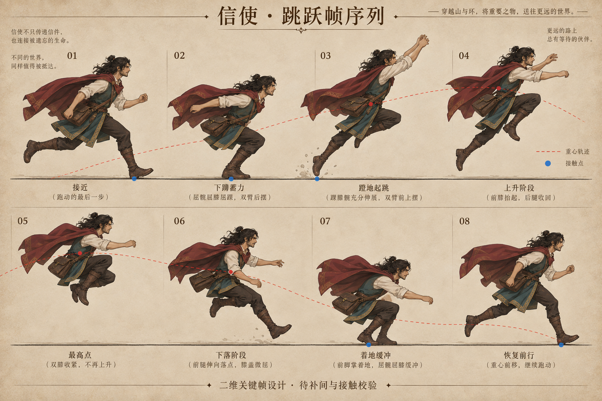
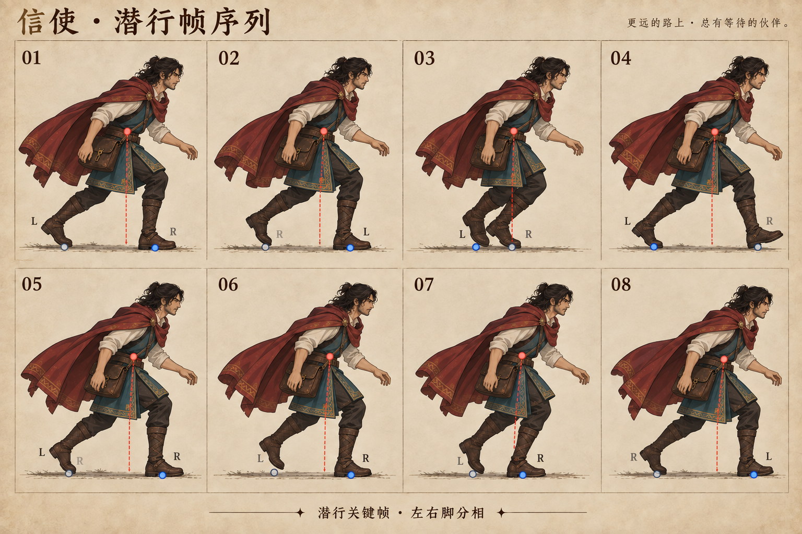
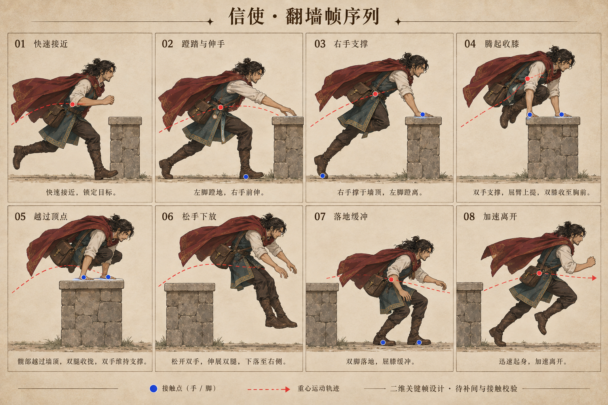

头部六视图 · 含顶视与左右侧视

五种动作、40格关键姿势，外加头部六视图和五官明细。使用内置 image_gen，以原认可角色为身份参考。
下载 Blender 参考工程（图像已内嵌） · 下载完整参考包 · Blender 建模与动作实施说明 · 生成提示词
动作图是关键姿势草案，尚未补间、绑骨或接回游戏。部分左右脚字母、接触点与肢体遮挡仍需按实施说明校正；不要将图中文字直接当作动画约束。已简化的模型靴子保持简化。






左：第六轮；右：第七轮。收回鼓起颧部、缩短下半脸、改善发束与耳部。与认可图仍有差距，尚未达到最终角色验收。


不是生成图，是独立 Blender 副本的实际渲染。原游戏与 Godot 角色未被替换。